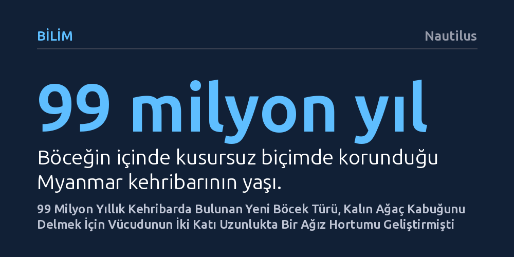

BILIM · Nautilus · 2026-10-11
Myanmar'daki 99 milyon yıllık kehribarda keşfedilen yeni bir böcek türü, vücudunun iki katından uzun ve süpürge hortumu gibi kıvrılabilen sıradışı bir ağız hortumuna sahip. Paleontologlar, bu yapının yangınlara karşı kalınlaşan ağaç kabuklarının derinindeki bitki özsuyunu emmek için evrimleştiğini düşünüyor.
Tarih öncesi böceklerin yangınlara uyum sağlayan ağaçlarla birlikte şaşırtıcı anatomik uzmanlaşmalar geliştirdiğini ve bu sıra dışı adaptasyonların günümüz böceklerinde tamamen kaybolduğunu gösteriyor.

Kehribar fosilleri, milyonlarca yıl önceki canlıları bozulmadan günümüze ulaştıran en berrak pencerelerden biridir. Tel Aviv Üniversitesi'nden paleontologlar, Myanmar'da bulunan 99 milyon yıllık bir kehribar parçasını incelerken daha önce kayıtlara geçmemiş bir böcek türüyle karşılaştı. Yarım kanatlılar (Hemiptera) takımına ve ağustos böcekleriyle cüce ağustos böceklerini içeren alt takıma ait olan bu yeni türe, çocuk programı Teletubbies'teki süpürgeden esinlenilerek Cretodorus noonoo ya da kısaca "Noo-Noo" adı verildi.
Bu tarih öncesi böceği günümüzde yaşayan tüm akrabalarından ayıran en belirgin niteliği, başından uzanan ağız yapısıydı. Canlının emici hortumu (proboscis), kendi gövde uzunluğunun iki katından daha fazlasına ulaşıyordu. Günümüz böcek dünyasında benzer oranlara çiçek nektarıyla beslenen bazı kelebek türlerinde rastlansa da bu kadar eski bir dönemde bir yarım kanatlıda böylesi bir anatominin varlığı bilim dünyası için tamamen yeni bir tablo ortaya koydu.
Araştırma ekibi, böceğin gövdesine kıyasla devasa kalan bu ağız borusunun mimarisini çözebilmek için yüksek çözünürlüklü mikro bilgisayarlı tomografi (mikro-BT) taramalarına başvurdu. Taramalar, ağız hortumunun dış yüzeyinin tıpkı bir elektrikli süpürge hortumunda olduğu gibi halka halka kıvrımlarla kaplı olduğunu gösterdi.
Bu akordeon benzeri boğumlu yapı, hortumun hem yüksek bir esneklikle her yöne bükülmesini sağlıyor hem de bükülme anında borunun kırılarak sıvı akışının tıkanmasını engelliyordu. Böylece böcek, uzun hortumunu kırılma ya da tıkanma riski yaşamadan karmaşık engellerin arasından kolayca yönlendirebiliyordu.
Bu denli uzun bir emme tüpü görüldüğünde ilk akla gelen ihtimal, böceğin derin çiçeklerin dip kısımlarındaki nektara ulaşmaya çalıştığıdır. Fakat bilim insanları bu hipotezi hızla eledi. Kehribar içinde mükemmel şekilde korunan böceğin gövdesinde ve tüplerinde en ufak bir polen kalıntısına dahi rastlanmadı. Dolayısıyla bu canlı çiçeklerle beslenmiyordu.
Araştırmacılar, Noo-Noo'nun hortumunu çiçeklere sokmak yerine, kalın ağaç kabuklarının derin çatlaklarından içeri sızdırdığını tespit etti. Hortumun ucu, soymuk borularına (floem) ulaşıp besin yönünden zengin özsuyu emmek üzere özelleşmişti. Hatta tüpün en ucunda iki adet kanallı lob bulunuyordu; araştırmacılara göre bu loblar, tıpkı duvara çakılan bir dübel gibi bitkinin iletim demetlerine sıkışarak böceğin basınçlı sıvıyı emerken sabit kalmasını sağlayan bir çapa işlevi görüyordu.
Peki bir böcek türü neden gövdesinden bu denli uzun bir beslenme mekanizmasına ihtiyaç duymuştu? Araştırmacılar, dönemin reçine üreten ormanlarında sıkça yaşanan orman yangınlarına işaret ediyor. Yangınlardan korunmak isteyen ağaçların hayatta kalabilmek adına olağandışı kalınlıkta kabuklar geliştirdiği, besin kaynağı giderek daha derine gömülen böceklerin de bu kabukları aşabilmek için hortumlarını giderek uzattığı düşünülüyor.
Ancak bu açıklama teorik bir kapı aralasa da geride yanıtlanmamış büyük bir soru bırakıyor. Benzer çevre baskılarıyla karşılaşan çağdaş böceklerin ve aynı alt takımdaki diğer akrabaların bu olağanüstü uzantıyı ve mekanizmayı neden daha sonra tamamen kaybettiği şimdilik gizemini koruyor.